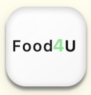

Food4U
Turning surplus food into meals — through real-time, last-minute redistribution.
My Role
UX Researcher & Designer
Lead on research, flows & final design
Timeline3 Weeks
PlatformNative Mobile App
ScopeResearch → Design → Testing
Scroll


Food4U · Native App
<60s
Post time
1-tap
Repost
0
Logistics calls